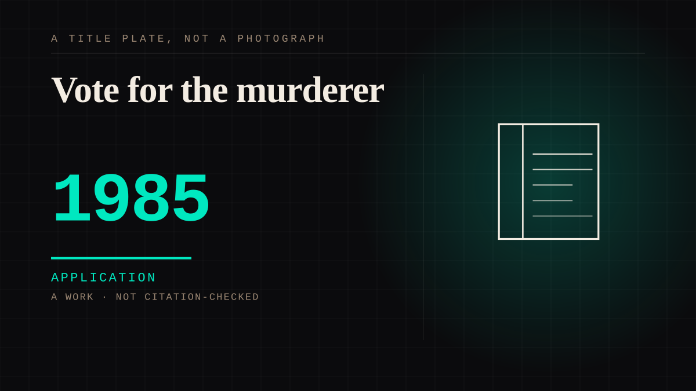

A work · 1985 · Theatre
Vote for the murderer
A musical of Dickens' unfinished novel that stops where the novel stops and turns the cliffhanger over to the seats: the audience votes who murdered Edwin Drood, who the disguised Dick Datchery is and which two characters end up together, and the cast performs the chosen ending that night. The house was promised 1,200 possible endings and that it 'won't be rigged in any way'.

A show sells the feeling of authorship and the feeling is the product. The Mystery of Edwin Drood is the musical Rupert Holmes built out of the novel Charles Dickens left unfinished at his death in 1870. It premiered at the Delacorte Theater in Central Park on 21 August 1985, moved to Broadway in December, and won five Tonys including Best Musical. When Dickens's plot runs out, the cast asks the audience to vote: who killed Drood, who the disguised Dick Datchery is, and which two characters the show will reward with each other. The director's own framing is in the records - "the last 40 minutes will be up for grabs every night", 1,200 possible endings, "it won't be rigged in any way".
The freedom had a border, and the border is the interesting half. A production that cannot guarantee a shape cannot guarantee an ending, so the industry hedges: the reference account records that some smaller companies fix the results to keep the number of performable endings manageable, and that some houses refuse to count votes for the obvious culprit so the reveal keeps its twist. The vote is tallied by applause and by seating area while the actors wait. The audience is deciding inside a band the production has already guaranteed, and the decision is scored as a vote rather than as an experiment.
Drood tells the audience the fiction's ending is theirs, and everything that makes that true - the tallying, the hedging, the rehearsed alternatives - happens where they are not. Three years later the same device ran on a telephone line, which is the relation to the comics entry this page points at: the manufactured consequence is identical, the room is different. What the audience got to do felt like control over the characters, and the vote was the machine that made the feeling.
Application. One-sided attachment put to work on purpose. Creator economies, community, fandom as infrastructure, and the things that genuinely help people. Not automatically good - a tool with an obvious use is a tool that will also get a bad one.
Manipulation. One-sided attachment engineered for somebody else's benefit. Paid intimacy, parasocial persuasion, sasaeng, grief extraction, the streak. The lane that pays the bills and the lane that causes the most harm, frequently at the same time.
Where it sits
1950 1950-1999 · 1985 1999
Provenance · 4 source record(s)
- unverifiedThe show as a whole: the first Broadway musical with multiple endings determined by audience vote, the five Tonys, the writer Rupert Holmes, the vote covering the murderer, Dick Datchery's identity and the romantic pairing, and the ways the industry bounds the freedom (fixed results in some smaller companies, uncounted votes for the obvious culprit in some houses). Read through a search index rather than fetched, so the record is unverified: a reader can open this page, this agent did not.Wikipedia, "The Mystery of Edwin Drood (musical)" ↗
- unverifiedDirector Wilford Leach's own framing of the mechanism: "The last 40 minutes will be up for grabs every night", the 1,200 possible endings, and "it won't be rigged in any way"; previews were to begin at the Delacorte in August 1985. Read through a search index rather than fetched, so the record is unverified: a reader can open this page, this agent did not.The New York Times, 3 May 1985, "Broadway" ↗
- unverifiedThe contemporary review's description of the vote: the audience "solves, resolves and concludes the mystery" by voice and hand to a series of multiple-choice propositions, an election led by the evening's master of ceremonies. Read through a search index rather than fetched, so the record is unverified: a reader can open this page, this agent did not.The New York Times, 23 August 1985, "STAGE: 'DROOD,' A MUSICAL IN THE PARK" ↗
- unverifiedThe premiere dates the section uses: a first performance at the Delacorte Theater in Central Park on 21 August 1985 as a New York Shakespeare Festival production, the vote by seating districts, and the mechanism it calls "an intricate parlor game". Read through a search index rather than fetched, so the record is unverified: a reader can open this page, this agent did not.Betty Buckley, official stage history of "Drood" ↗
Connected · 3 out, 1 in
It sits in